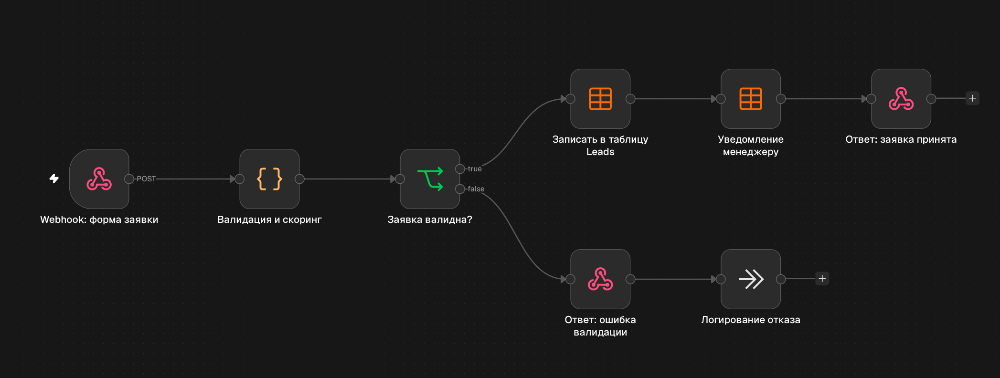
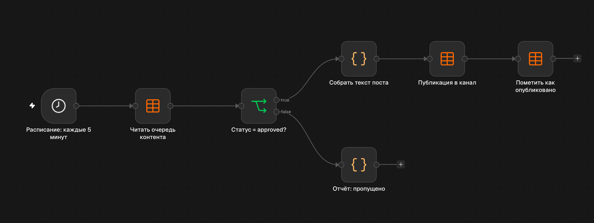
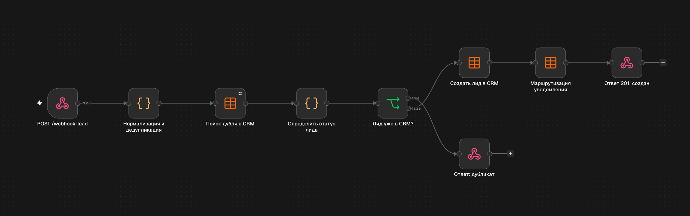
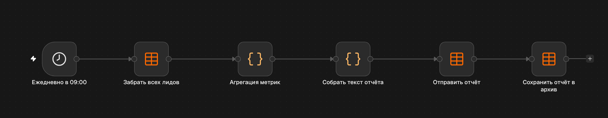

Ниже — четыре задачи с моего сервера. У каждой есть схема, реальные запуски
и проверка на тестовых данных: так видно, что решение работает, а не нарисовано.
Заявки с сайта сразу попадают в таблицу
сайт, таблица, уведомление менеджеру
СайтПроверкаУсловиеТаблица

7 шагов2 веткитаблица заявок и список уведомлений
увеличить
Было
Заявки с сайта приходили в почту, менеджер отвечал вручную. Часть заявок терялась.
Стало
Заявка с сайта сразу попадает в таблицу, менеджер получает уведомление. Клиенту отвечают: «свяжемся в течение 15 минут». Если в имени, телефоне или почте ошибка, заявка не пропадает. Она попадает в отдельный список с пометкой, что исправить.
Результат
Проверил на двух заявках: правильной и заведомо испорченной. Первая попала в таблицу, вторая в список ошибок.
Что получает клиент
Таблица, куда заявки попадают сразу с сайта
Уведомление менеджеру о каждой новой заявке
Отдельный список заявок с ошибками и подсказкой, что исправить
Посты сами выходят в Telegram-канал
Google Таблицы и Telegram
Сбор текстаУсловиеТаблица

6 шагов1 веткаочередь постов и список опубликованных
увеличить
Было
Посты из таблицы копировали в канал вручную. Черновики иногда попадали в эфир, а одни и те же посты выходили дважды.
Стало
Каждые 5 минут система сама берёт готовые, одобренные посты. Она собирает текст с хештегами и публикует его в канале. Черновики и отклонённые посты она не трогает.
Результат
В проверке стояло 4 поста, ушли ровно 2: только одобренные.
Что получает клиент
Публикация одобренных постов каждые 5 минут
Текст с хештегами, собранный автоматически
Защита черновиков и отклонённых постов от случайного выхода
Повторные заявки больше не попадают в базу
заявки, таблица, ответ клиенту
СайтПроверкаУсловиеТаблица

9 шагов2 веткибаза заявок и список уведомлений
увеличить
Было
Один клиент оставлял заявку несколько раз. Отдел продаж тратил время на ручную проверку.
Стало
Система узнаёт повтор по почте или телефону и не создаёт вторую запись. Новой заявке отвечает «заявка зарегистрирована», повторной «такая заявка уже была, статус прежний». Заявки с пометкой «нужен прайс» и телефоном сразу уходят отдельному человеку.
Результат
Одна запись на клиента вместо нескольких, ручной проверки повторов больше нет.
Что получает клиент
Одна запись на клиента, даже если он писал несколько раз
Разные ответы для новой и повторной заявки
Передача заявок с пометкой «нужен прайс» отдельному человеку
Утренняя сводка по заявкам в 9:00
таблица, сообщение в чат
Свод данныхТаблица

6 шагов1 расписаниетаблица заявок и история сводок
увеличить
Было
Каждое утро менеджер сводил цифры в таблице и пересылал сводку в чат. Считал каждый раз по-разному.
Стало
Каждое утро в 9:00 система сама собирает заявки за сутки. Она присылает одно сообщение: всего заявок, сколько срочных, средний приоритет, сумма бюджетов и откуда пришли. Сводки сохраняются, поэтому прошлый день можно сравнить с сегодняшним.
Результат
В последней сводке: 6 заявок, 5 срочных, средний приоритет 77 из 100, бюджеты на 580 000 ₽.
Что получает клиент
Сообщение в чат каждое утро в 9:00
Одинаковый подсчёт каждый день без ручной работы
Сохранённая история сводок для сравнения дней
система n8n на моём сервере
шаг 1
Заявка приходит и сразу идёт в работу
Форма на сайте отправляет заявку прямо в систему, а не в почту, где она лежит до конца дня и половина теряется.
шаг 2
Данные проверяются, а не теряются
Имя, телефон и почта сверяются. Если человек ошибся, заявка не исчезает: она попадает в отдельный список с пометкой, что исправить.
шаг 3
Заявка лежит в таблице и расходится дальше
Из одной таблицы заявка уходит менеджеру в уведомление, попадает в контент-план и учитывается в утренней сводке.
шаг 4
Утром приходит одна сводка
В 9:00 система закрывает день одним сообщением: сколько заявок, сколько из них срочных, откуда они пришли и какие бюджеты. Дальше это просто таблица, в которой видно динамику.
1 / 4
Как я работаю
Три шага от вашего описания задачи до работающего решения, которое можно показать и потрогать.
шаг 1
Разбираем вашу задачу
Вы рассказываете, что сейчас делаете вручную. Я уточняю детали и называю цену до начала работы.
шаг 2
Собираю и проверяю
Я собираю схему работы и прогоняю её на тестовых данных. Вы видите, как всё работает.
шаг 3
Передаю и показываю
Вы получаете готовое решение и короткую инструкцию. Если что-то сломалось, помогу бесплатно.
Как вы это получите
Два способа. Разница — в том, есть ли у вас уже своя копия n8n и свой сервер.
Файлы
Я отдаю готовые файлы сценария и короткую инструкцию. Вы или ваш технический человек загружаете их в свою копию n8n и создаёте таблицы с указанными именами. Подходит, если n8n у вас уже есть.
Полная настройка
Я сам запускаю n8n на вашем сервере или на свободном сервере под ваш проект. Создаю таблицы, подключаю Telegram, Google Таблицы или базу заявок и показываю работу на тестовых данных. Подходит, если своего сервера нет. Дальше остаётся поддержка, и пока она бесплатная.
Сколько стоит работа
Цена «от» включает саму схему, проверку на тестовых данных и короткую инструкцию. Поддержка после сдачи — бесплатно.
Простая автоматизация с одним сервисомот 1 000 ₽
Связка двух-трёх сервисов, например заявки с сайта в Telegramот 1 500 ₽
Многошаговый сценарий с расписанием и отчётамиот 2 000 ₽
Полная настройка на вашем сервере с проверкой и обучениемот 2 500 ₽
Частые вопросы
Те, что задают чаще всего, когда решаются автоматизировать что-то впервые.
Я ничего не понимаю в автоматизации. Мне это подойдёт?
Да. Вы рассказываете, что делаете вручную, а я предлагаю решение простыми словами и называю цену до начала работы.
А если у меня нет своего сервера?
Тогда я сам запущу n8n на вашем сервере или на свободном под ваш проект. Это вариант «Полная настройка», от 2 500 ₽.
Что будет, если что-то сломается?
Пока поддержка бесплатная: если что-то сломалось, неполадками занимаюсь я. Если вы взяли только файлы, поможет короткая инструкция.
Можно ли сначала проверить, как это работает?
Да. Перед сдачей я прогоняю сценарий на тестовых данных и показываю результат. Например, из 4 тестовых постов ушли ровно 2.
Расскажите, что вы делаете вручную
Напишите, какую задачу хотите убрать из ручной работы. Я отвечу, подойдёт ли автоматизация и сколько она будет стоить.